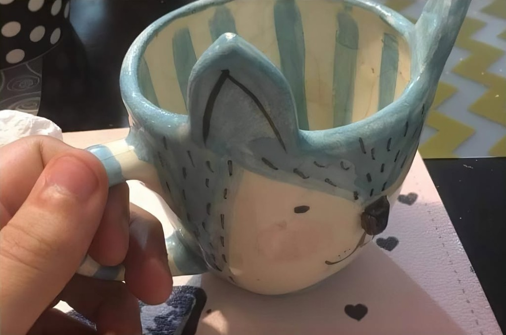
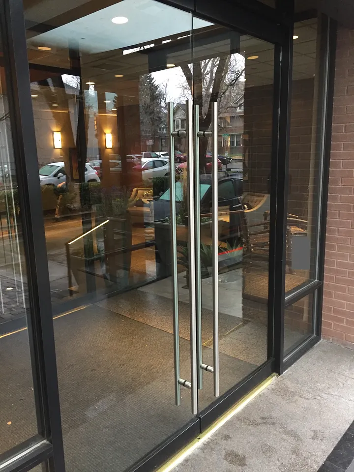
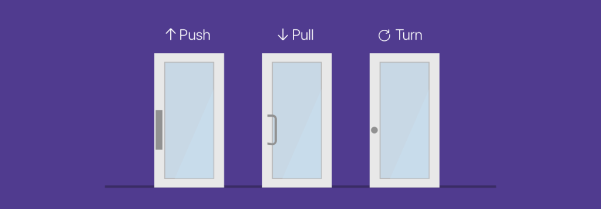
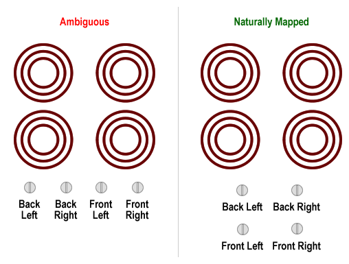

UI/UX Design
in Practice.

Practitioner · design leader · educator
Arun
Murugesan.
I turn complex technology into experiences people can understand, trust and use.
industry experience
What is UX?
Studio task
Design a wallet.
A physical money purse, folded from the paper you have been given.
The Brief
Design a paper wallet or money purse. It must hold cash, coins, or cards, and let someone pay at the canteen without you explaining how it works.
The Studio Rules
- 01One primary task. Pay without emptying the whole purse.
- 02Organise what goes in. Cash, coins, and cards—each with a clear place.
- 03Paper only. Tape and scissors. No screens.
Present your wallet.
User experience (UX)
A person’s perceptions and responses that result from the use and/or anticipated use of a product, system, or service — before, during, and after use.
Includes
- Task, effort, error, trust
- Emotion and behaviour in context
Is not
- Visual styling or decoration
- The same as UI
The term
“UX”.
UX is how use feels.
From Don Norman, The Design of Everyday Things.
People blame themselves when a door, wallet, or screen confuses them. Often the object failed to communicate how it works — that is a user experience problem, not user error.
Good UX
- You know what to do next
- Mistakes are recoverable
- The object matches how you think it works
Poor UX
- You need a spoken tour
- Wrong action feels “natural”
- Embarrassment or delay in public
What’s wrong?

Decoration blocked the task.
The ears sit where your face goes when you tip the mug. Cute to look at — painful to use. That is bad user experience.
Building door

Do you know push vs pull without reading a sign?
Better solution

Signifiers match the action — pull handles for pull, push bars for push. Fix the door, not the person.
Stove knobs
Can you tell which burner you turned on?
Better solution

Map controls to the layout people see — each knob sits where its burner is.
In your paper wallet, what already works — and what does not?
Let’s design a better design for your wallet.
Shall we?
Words from the book.
Use these when you rebuild wallet version 02.
Affordance
What the object allows
A slot affords inserting a card; a flap affords opening — if the hand can discover it.
Signifier
What shows where to act
Colour, notch, or fold that says “open here” — like a handle that says “pull.”
Feedback
What confirms the action
Click of a latch, note visible in the right compartment, coin not falling out.
Conceptual model
How the user thinks it works
“Notes live here, change here, pay from here” — your folds teach that model or fight it.
Wallet version 02.
Rebuild from the definition: task, journey, error — not prettier paper.
What is UX?
What is UI?
UI is the thing. UX is using it.
UX vs UI.
User research.
Listen to real people before you rebuild. Task 3 is not for you — it is for someone you interview.
Start user research.
Find someone in the room. Listen before you design.
User research
Evidence about real behaviour — not taste, not guessing.
Version 03 is for someone else. You need to understand how they pay, carry money, and feel in public — before you fold paper for them.
Research is
- Watching and listening to a real person
- Asking about what they already do
Research is not
- “Do you like my wallet?”
- Designing for yourself with extra steps
How to interview
One person in the room — a classmate or neighbour. Talk about paying and carrying money. Do not lead with your paper wallet or ask them to praise it.
- Open past behaviour — “Walk me through the last time you paid…”
- Hands and context — queue, canteen, who is watching
- Write their words — short quotes you can point to later
What to listen for
Task
Start to finish
How payment actually happens — not the ideal story.
Friction
Embarrassment & delay
When a purse or wallet failed them in public.
Contents
Cash, coins, cards
What must stay separate; what they need fast.
Trust
Before they walk away
How they know the right note or change left the purse.
From research to folds
Every slot and flap in version 03 should trace to something they said. If you cannot quote them, you are still designing for yourself.
Ready when
One person chosen · notes in your hand · you can name their primary pay task in one sentence.
Studio task
Wallet version 03.
Design for the person you interviewed — not for yourself.
The brief
Rebuild the paper wallet so it fits how they pay, what they carry, and what they told you. You should be able to point to a quote when someone asks why a fold or slot exists.
Task 3 rules
- 01One person. The same someone you just interviewed.
- 02Their task. Match their canteen or payment habit — not yours.
- 03Keep all three. Versions 01, 02, and 03 stay on the table.
What is UX?
Three wallets.
One sentence each.
- 01Version 01 — what you thought UX was before the definition.
- 02Version 02 → 03 — what changed and why.
- 03Now — what UX is, in one sentence.
Class notes.
Shared with the cohort. ISO definitions for examination.
Human–Computer Interaction
The study of how people interact with computational systems, and how those systems should be designed so interaction is effective, efficient, and satisfying.
User experience (UX)
A person’s perceptions and responses that result from the use and/or anticipated use of a product, system, or service. Includes emotion, belief, preference, and behaviour — before, during, and after use.
User interface (UI)
The point of contact through which a person operates a product or system.
Usability
The extent to which specified users can achieve specified goals with effectiveness, efficiency, and satisfaction in a specified context of use.
Terms.
Affordance
Perceived possibility for action
How the object shows how it can be used.
Feedback
Information after an action
Confirms what the object or system did.
Mental model
How the user thinks it works
Design should match or teach it without a spoken tour.
HCD
Human-centered design
People, the real problem, the whole system.
Full class notes.
Shared with the cohort
{kind=link}